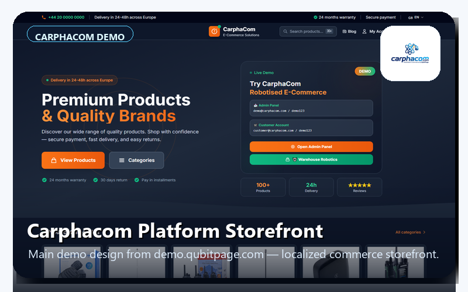
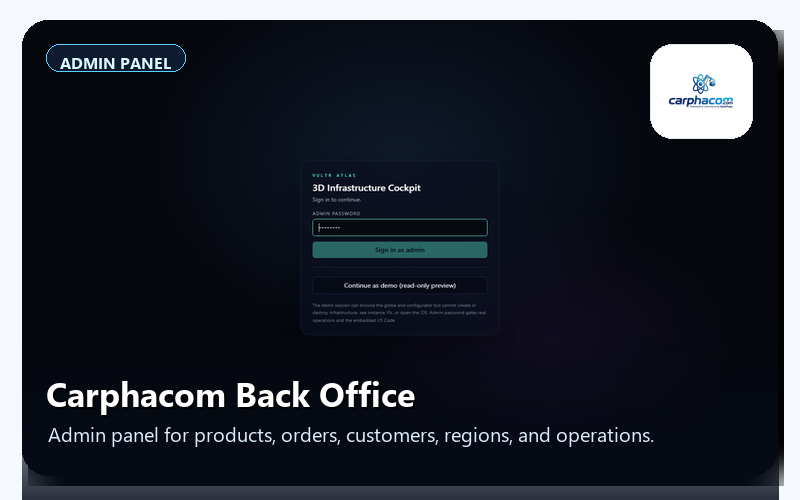
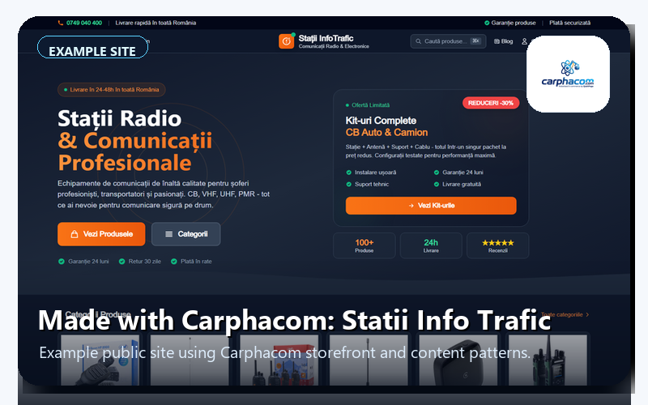
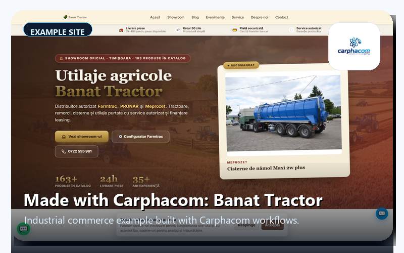
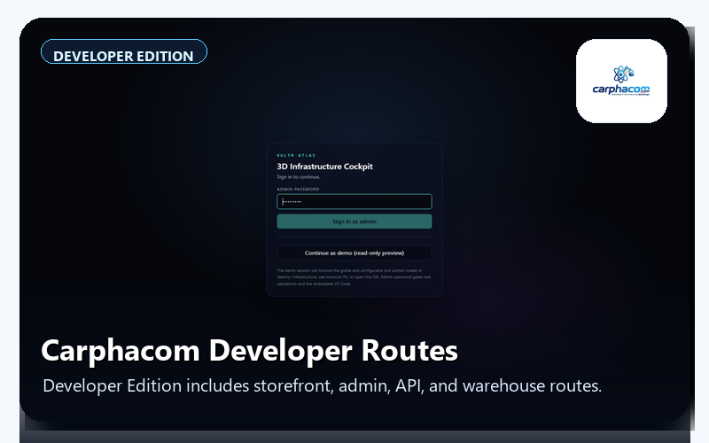

Upload only the polished 800x500 PNG files below. The first image is the real main design from demo.qubitpage.com. The admin image is Carphacom's own Back Office / Admin Panel, not Vultr Cockpit.

1. Carphacom Platform StorefrontMain demo design from demo.qubitpage.com with localized commerce storefront.

2. Carphacom Back Office / Admin PanelCarphacom admin for catalog, orders, customers, regions, and operations.

3. Made with Carphacom: Statii Info TraficExample public site using Carphacom storefront/content patterns.

4. Made with Carphacom: Banat TractorIndustrial commerce example built with Carphacom workflows.

5. Carphacom Developer RoutesDeveloper Edition includes storefront, admin, Medusa API, warehouse, and digital-twin routes.